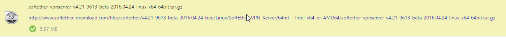

写在本文前面的话
本文的VPN搭建教程仅推荐有VPS需求或者决定多人共用一个VPN的人使用，因为笔者本身需要在VPS上跑在做项目的服务器做测试用，VPN对于笔者来说是个附属品，如果单纯为了VPN搭个梯子而去买一个VPS，您大可不必按照教程大费周章地倒腾，直接到网上买一个现成的来得快速来得实在。如果是在校内想免流量也可以考虑买chinaNet或者chinaUnicom的账号，100个小时才十几块钱，无限流量，带宽也不低（chinaNet亲测能到8-9M/s），还不会出现访问墙内资源奇慢的状况。
——本文为博主原创，转载请注明出处。
上篇教程我们提到了怎么搭建一个能走ipv6的ss，但是如果你需要下个游戏，比如刺客信条枭雄，40多个G要是不想花流量钱的话你得下俩月，所以就有了这一篇教程。
首先第一步，选对工具
选择一个好的工具是减少工作量的关键，目前使用比较多的vpn服务器搭建方式有Openvpn、PPTP等，但是PPTP貌似是不支持ipv6的，所以就不用考虑了，Openvpn嘛。。。虽然支持ipv6，但是配置很麻烦，要写很多配置文件，而且貌似不容易成功。
然后我同学就给我推荐了日本一个大学做的一个比较冷门的东西softether vpn。这个东西我看了文档之后发现非常的好用，首先它不用像Openvpn那样写一大堆的配置文件，以及有远程的服务器控制软件，不用每次都ssh到服务器里（虽然也不是特别麻烦），以及控制软件做一些操作比较方便，不用老是写配置文件（说白了还是不用写那么多恶心的配置文件）。
然后，开始正式的教程
首先，你需要ssh到你的服务器里（上篇教程有说到怎么用xshell）
然后，你需要下载一个softether VPN server，如果你是按我上篇教程创建的服务器，输入wget http://www.softether-download.com/files/softether/v4.21-9613-beta-2016.04.24-tree/Linux/SoftEther_VPN_Server/64bit_-_Intel_x64_or_AMD64/softether-vpnserver-v4.21-9613-beta-2016.04.24-linux-x64-64bit.tar.gz
就好了，如果不是，那么就打开 http://www.softether-download.com/cn.aspx 按照你的机器配置，选好softether VPN server下载包，然后把它的地址获取到
比如我下好了这个东西，它的第二行蓝色的地址，就是把wget后面的地址改为它就行了
因为这个东西在墙外，如果你的服务器在国内且没有梯子的话，你可以用lantern psiphon之类的东西把它下载下来，就上传到git，然后git clone吧
下好了这个东西之后，输入tar -zxvf softether-vpnserver-v4.21-9613-beta-2016.04.24-linux-x64-64bit.tar.gz解压，tar -zxvf后面跟着的东西是你的文件名，如果跟我的不是同一个文件，请改成你的文件名
解压完之后，先别着急，如果你现在直接执行make，就会报错，因为我们还有一些必要的东西没装上
首先，如果你没有make，输入apt-get install make
以及apt-get install gcc-multilib
以及如果你没有装build-essential的话，apt-get install build-essential
这时候，你就可以cd vpnserver
然后直接输入make，进行安装了
过程中会有三次让你输入数字选择选项，输入3次1就行了（输入2会直接退出的）
理论上，现在你已经安装成功了，它会提示你
然后下面会接着一大堆乱七八糟的 for xxx users的文本，忽略即可
反正没出现error就是对了，如果有问题，可以到stackoverflow上输入你的错误查一查，理论上是都可以解决的。
要开始运行vpn服务器，输入./vpnserver start
如果要停止，输入./vpnserver stop
（如果你之后打开服务器想要开始或者停止vpnserver，需要先cd vpnserver进入vpnserver这个文件夹）
然后，你就可以关掉你的xshell了，因为接下来的任务都在你的pc上完成
在本机上配置你的服务器
这里以笔者用的windows为例
首先到http://www.softether-download.com/cn.aspx 上下载一个windows端的server manager，然后安装，安装的时候，不用选择有bridge的那个，直接只装管理工具就好了
然后选择安装路径什么的，安装完成后，打开这个管理工具
（你的因为还没配置过，应该只有一个本地主机）
点击新设置
设置一个你喜欢的名称，这里我给它取名叫vultr_test，然后在主机名里输入你的服务器ip地址（建议输ipv4地址，我输入的是ipv6的地址，其实输入ipv4或者ipv6都行，如果你当前的网络支持ipv6，就可以用ipv6），点击确定
然后选择刚刚创建的vultr_test，点击连接
如果是第一次连接，会要求你创建一个管理员密码
然后在下一步选择vpn的其他高级配置并点击关闭
然后会有一个弹出框，点击确认就好，之后会来到IPsec/L2TP/EtherIP/L2TPv3设置界面
选择启用L2TP服务功能（L2TP over IPsec），并输入你的IPsec预共享密钥（自己设定的，我的当然不是blablabla，毕竟都让你们看到了:）
注：如果你要在win8自带的vpn或者其他的不支持预共享密钥的客户端连接服务器，请勾选第二个选项，连接的时候就允许不输入你的预共享密钥了
然后点击确定，就来到了管理器界面
点击管理虚拟HUB
再点击管理用户，在管理用户界面里点新建
输入用户名和密码就好了，其他的不用动，点击确定。
现在我们要设置服务器，让它能给用户分配ip地址
我们回到刚才管理虚拟HUB的界面，点击右下边的 虚拟NAT和虚拟DHCP功能（SecureNAT）设置
点击启用SecureNAT，再点击SecureNAT配置，然后如果你不会配置的话就抄我的配置，mac地址不要改
点击确定
然后你就可以用你的vpn客户端登录了
本机连接VPN服务器
这里我用的是win10自带的vpn，打开win10的设置，进入网络和internet->VPN，点击添加VPN连接，VPN提供商用windows（内置），服务器名称或地址就填你的服务器地址（填ipv6地址你的流量就走ipv6，填ipv4地址就走ipv4），VPN类型选择使用预共享密钥的L2TP/IPsec，其中预共享密钥是你先前设置的，然后输入用户名密码，点击保存。
点击vultr_test的连接选项，然后
此时你可以百度搜索ip验证你是否真的连接到了你的服务器上
如果你像我一样，ip地址变成了服务器ip，那么恭喜你，你可以愉快地使用属于你自己的vpn了！
以及如果你要走ipv6通道，就在新建VPN连接的时候在服务器名称或地址填上你的ipv6地址就好啦（注意，必须你的网络支持ipv6才可以用）
然后你就可以用校园网自由畅快的用ipv6的VPN上网而不花任何校园网流量而且还自带梯子啦！
以及手机端不方便截图就文字说明一下怎么连接吧， android端打开网络里的VPN，新建一个连接，选择类型 L2TP/IPsec PSK，输入IPsec预共享密钥，其余的空着就行了，点击完成，连接的时候，输入你的用户名密码就好了。
三花
2016.11.24
返回博客主页